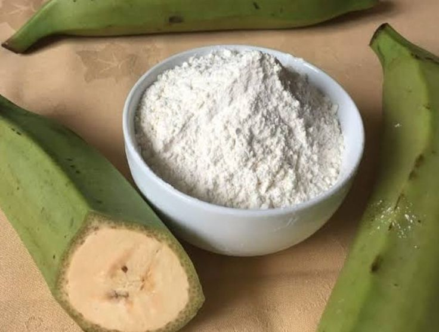
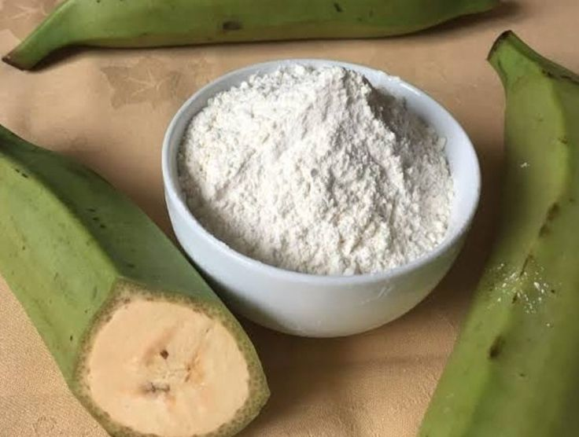
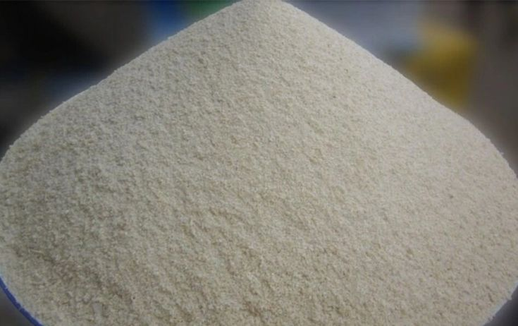
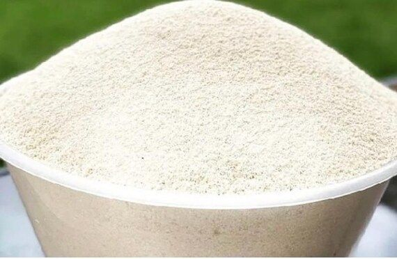
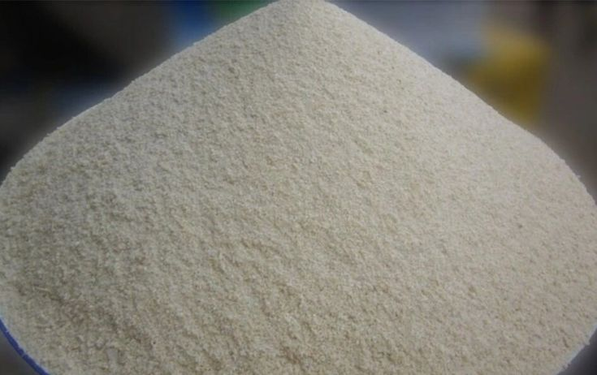
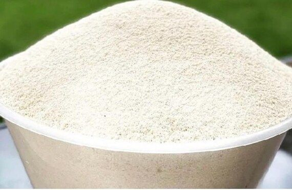
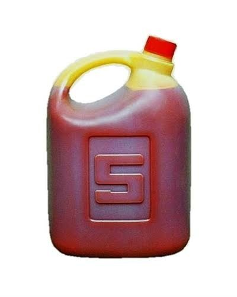
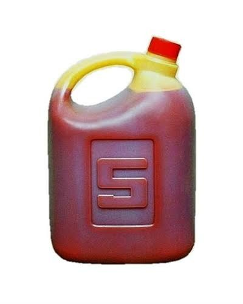

GLOBEFARMS
GLOBEFARMSVENTURES
GLOBEFARMSPlantain Flour • Yam Flour • Garri • Cassava Flour • Palm Oil
Explore ProductsGlobefarms Ventures (GLF FOODs) is an agro-allied enterprise committed to the secondary production and value addition of agricultural commodities in Nigeria. The company is duly approved by the National Agency for Food and Drug Administration and Control (NAFDAC) to process, package and distribute high-quality staple food products including unripe plantain flour, palm oil, GLF Garri Ijebu, Yam flour (amala), and cassava flour(Lafu/White Amala).
Our products are carefully processed under strict hygiene and safety standards to preserve their nutritional value, freshness and taste, ensuring that they meet the needs of supermarkets, retail outlets, households and final consumers across Nigeria and beyond.
At GLF FOOD, we are driven by a mission to add value to Nigeria's rich agricultural resources by offering affordable, nutritious and well-packaged food products. Through innovation and quality assurance, we aim to promote food security, healthy living and sustainable consumption practices.
We are committed to becoming a trusted household brand by consistently delivering products that reflect excellence, integrity and reliability.

 



 





 
